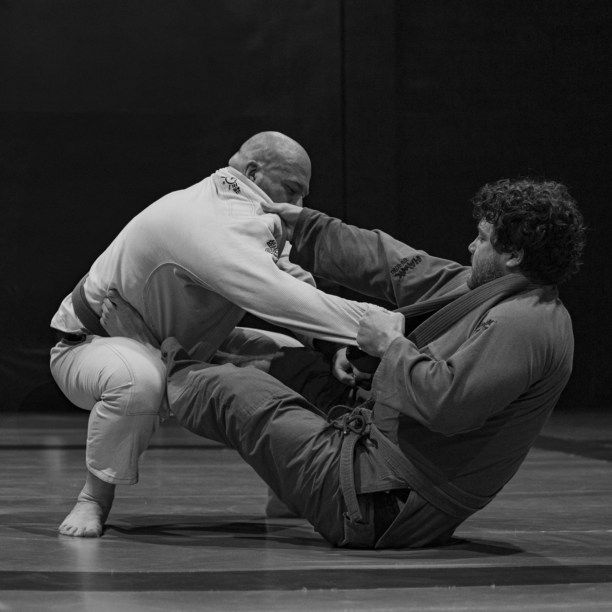
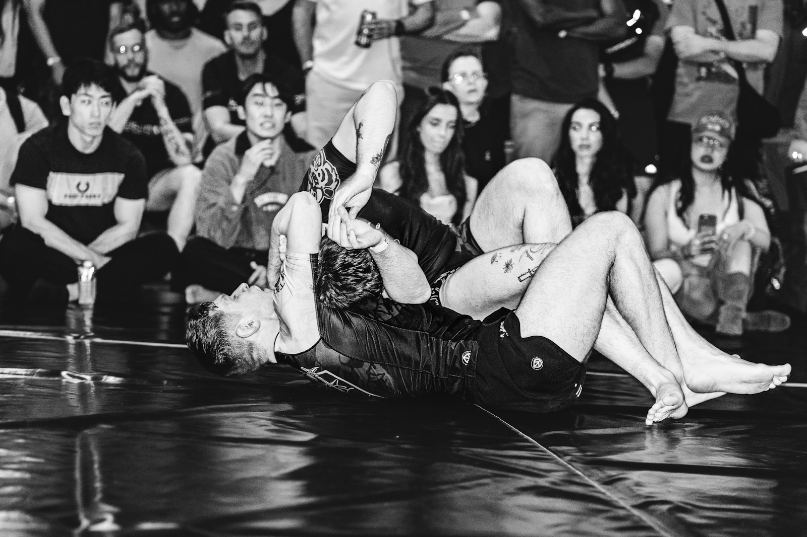

Transforme o Livro de Regras em reflexo de competição. Teste decisões de arbitragem, pontuação e punições com resposta comentada e artigo de referência.


Escolha o nível, ajuste as regras e comece. Cada rodada conta para a sua evolução de faixa.